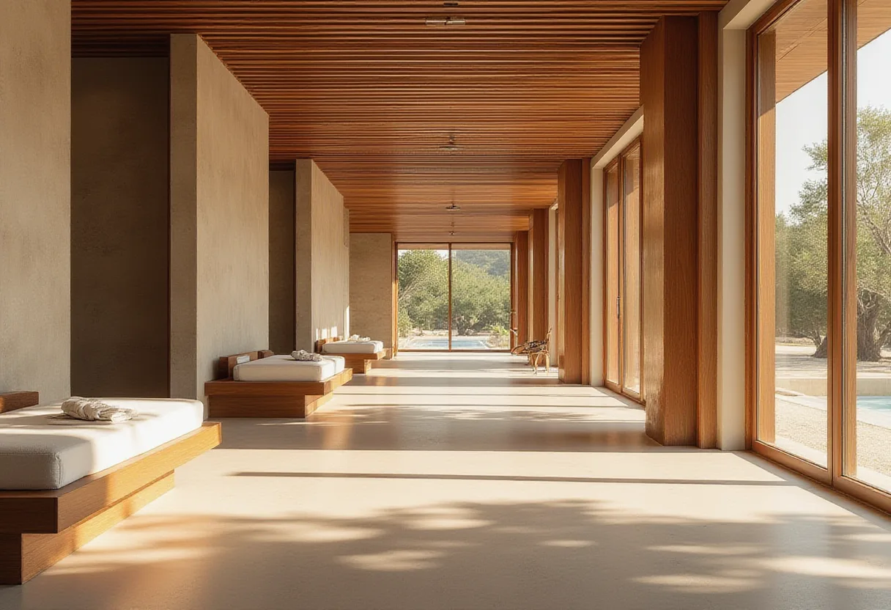

여의도 지역 유흥·마사지 총정리

다양한 선택지를 한눈에 비교하고, 나에게 맞는 최적의 옵션을 찾아보세요.
여의도 마사지
- 특징
- 스웨디시식 전신 오일 마사지, 1인 프라이빗 룸·샤워실 구비.
- 가격대
- 코스별 6만원~15만원 (60~120분).
- 이용 방법
- 예약 후 방문, 테라피스트 숙련도·청결 확인.
- 추천 상황
- 직장인 피로 회복·정기적인 멤버십 이용.
여의도 셔츠룸
특징
와이셔츠 차림 매니저가 접객, 밝고 모던한 인테리어, 아담한 룸.
가격대
1인 20만원~40만원 (룸티+주대+TC 포함).
이용 방법
예약 후 2부제 운영, 저녁 시간에만 이용 가능.
추천 상황
20~40대 직장인·MZ, ‘편하지만 고급스러운’ 분위기 선호자.
여의도 룸싸롱
- 특징: 대형 룸, 양주와 매니저 동석, 샹들리에·대리석·벨벳 소파.
- 가격대: 1인 30만원~70만원 (1부·2부 차등).
- 이용 방법: 1부(저녁)·2부(심야) 운영, 2부 가격 상승.
- 추천 상황: 기업 임원·VIP 비즈니스 미팅, 매니저 퀄리티 중시.
여의도 텐프로
극소수 최상위 1% 유흥으로, 가격표 없는 회원제와 지인 소개가 필수입니다. 1인 50만원~100만원 이상이며, 발렛·전용 출입구·완벽한 방음이 특징입니다. 기업 오너·유명인·재력가 대상이며, 프라이버시가 핵심입니다.
여의도 텐카페
| 특징 | 카페·라운지·유흥 하이브리드, 술이 아닌 대화 중심. |
|---|---|
| 가격대 | 1인 20만원~40만원 (음료+룸티+TC, 시간당 연장). |
| 이용 방법 | 예약 후 낮 시간대 영업, 매니저와 대화. |
| 추천 상황 | 술이 부담스러운 고객·조용한 대화 선호층. |
여의도 쩜오
텐프로 바로 아래, 룸살롱 위의 고급 유흥. 1인 40만원~70만원. 예약제이며 어둡고 은은한 라운지+룸 하이브리드, 재즈·라운지 음악이 흐릅니다. 전문직(의사·변호사·임원) 대상, 매니저 교양·대화 수준이 차별점입니다.
여의도 하이퍼블릭
특징
룸살롱과 셔츠룸 사이 하이브리드, 캐주얼하고 오픈된 분위기.
가격대
1인 15만원~30만원, 맥주 등 주류 선택 자유.
이용 방법
Bar 형태 + 룸 혼합, 네온사인·감각적 조명.
추천 상황
20~40대 2차 장소, 대중적인 접근성 선호자.
여의도 풀싸롱
룸살롱·식사·노래방·공연이 한 공간에 결합된 올인원 유흥. 1인 20만원~40만원 패키지에 뷔페·식사 포함. 넓은 홀·룸·식당·무대, 각 룸에 노래방 기기. 단체 회식·동창회·송년회에 최적화된 ‘이동 없이 여기서 다 된다’가 핵심.
여의도 가라오케
노래방 설비와 주류·안주 제공. 방음 룸·최신 곡 리스트·고음질 음향. 회식 2차·단체 모임에 많이 이용됩니다.
여의도 노래방
코인노래방(곡당 500~1,000원)과 일반 노래방(시간당 15,000~25,000원) 구분. 최신곡 업데이트·음향·부스 청결이 선택 기준이며, 주류 판매 여부는 업소마다 다릅니다.
여의도 비즈니스클럽
고급 라운지 형태로 프라이빗 룸·미팅 공간 제공. 룸살롱보다 격식 있고 조용한 톤. 클라이언트 미팅·기업 접대·소규모 사교 모임에 적합하며 프라이버시와 품격이 핵심입니다.
여의도 펍
수제 맥주와 안주 제공. 맥주 6,000~9,000원, 안주 8,000~15,000원. 바 카운터·테이블 좌석, 라이브 음악·스포츠 중계도 가능. 가벼운 저녁 모임·1차 자리로 적합합니다.
선택 기준 및 이용 전 확인사항
- 예산: 15만원 이하 → 하이퍼블릭, 펍 등 저가 옵션; 20만원 이상 → 셔츠룸·텐카페·풀싸롱 등.
- 프라이버시 필요 여부: 텐프로·비즈니스클럽·풀싸롱이 최적.
- 시간대 선호: 2부제 운영업소는 저녁·심야 확인 필수.
- 음주 여부: 텐카페는 비음주 대화, 가라오케·노래방은 음주 가능.
조건별 적합성
비즈니스 미팅
비즈니스클럽·룸싸롱·풀싸롱
친구와 가벼운 회식
펍·하이퍼블릭·노래방
프라이버시 중시
텐프로·쩜오·비즈니스클럽
술 없이 대화
텐카페·가라오케(음주 선택 가능)
자주 묻는 질문
여의도 마사지 가격은 어떻게 되나요?
여의도 마사지 코스는 6만원에서 15만원 사이이며, 60분에서 120분까지 선택할 수 있습니다. 옵션에 따라 아로마, 스톤, 딥티슈 추가가 가능합니다.
여의도 셔츠룸은 어떻게 이용하나요?
예약 후 방문하면 매니저가 와이셔츠 차림으로 맞이합니다. 1인당 20만원에서 40만원 사이이며, 2부제 운영으로 저녁 시간에만 이용 가능합니다.
여의도 텐프로 예약은 어떤 조건이 필요한가요?
텐프로는 지인 소개가 필수이며, 회원제로 운영됩니다. 가격은 비공개이며 1인당 50만원에서 100만원 이상이 일반적입니다.
여의도 하이퍼블릭은 어떤 분위기인가요?
하이퍼블릭은 룸살롱과 셔츠룸 사이의 하이브리드 형태로, 캐주얼하고 오픈된 분위기에 네온 조명이 특징이며 1인당 15만원에서 30만원 사이입니다.
김하늘 – 여의도 지역 정보를 5년간 정리해온 로컬 가이드